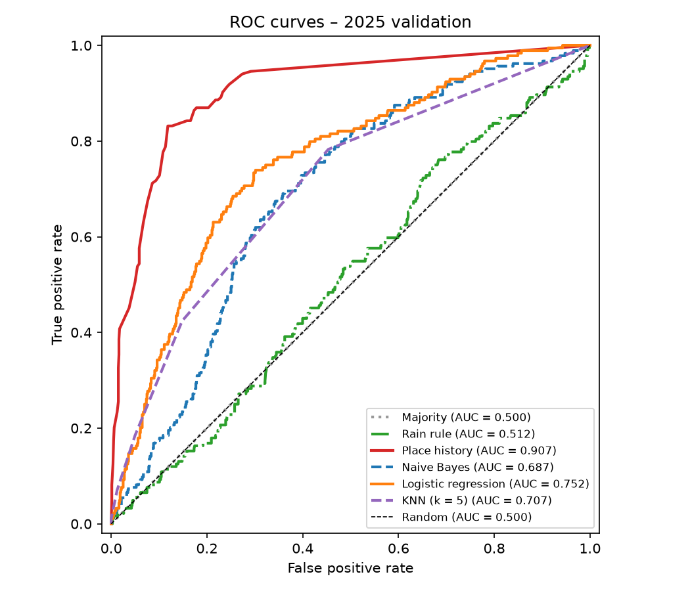
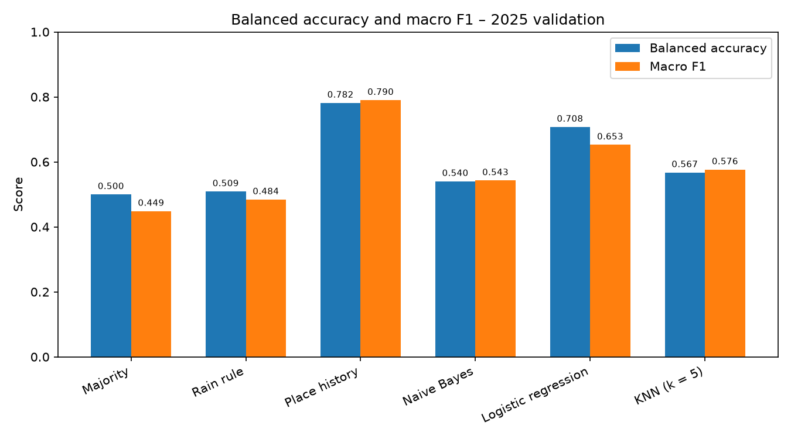
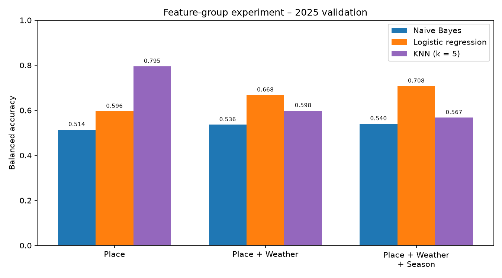
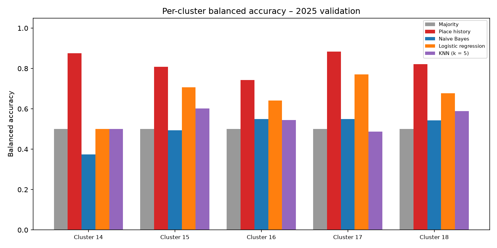
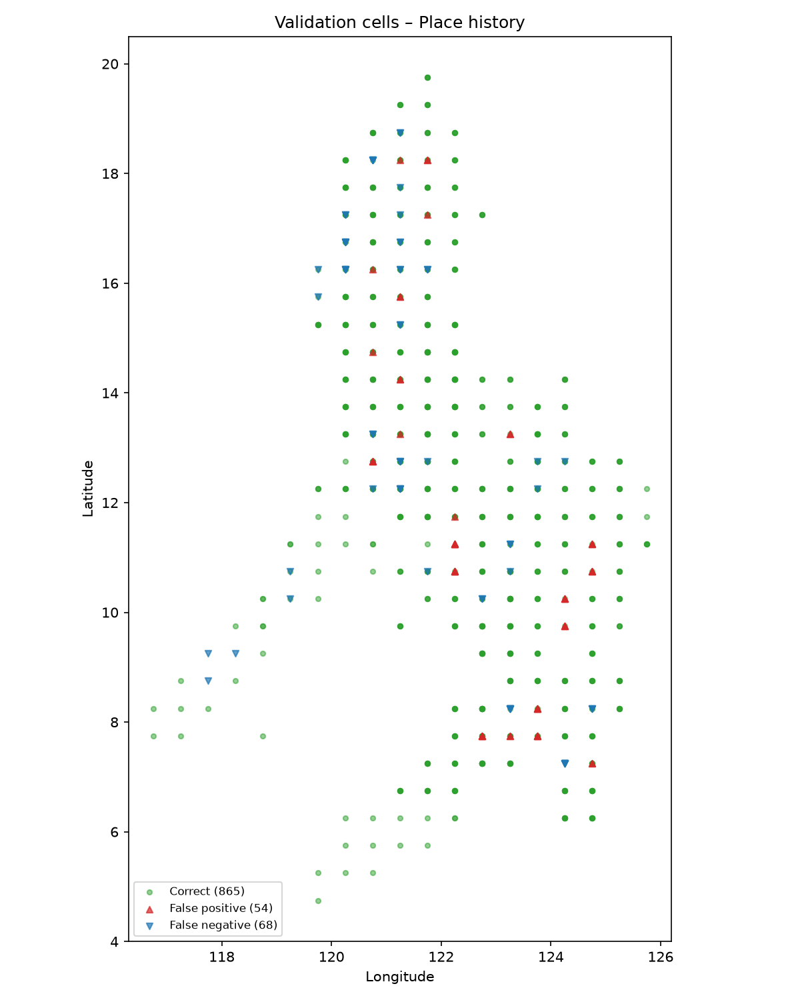

Introduction
Tropical cyclones and the southwest monsoon repeatedly cause flooding across the Philippines. The Philippine Space Agency (PhilSA) publishes satellite-derived flood extent maps after these events. This project investigates whether location, weather before a satellite pass, and season can help predict which geographic cells are classified as flooded.
Research Question
How well can we predict which areas flood in a new storm, and how much does weather before the storm add beyond the place itself?
We compare three machine learning algorithms implemented from scratch using NumPy against three baselines. Training, validation, and test data are separated by year, keeping passes from the same storm cluster together.
Data
Sources and Credits
- Flood labels: PhilSA Sentinel-1 flood extent maps from the Humanitarian Data Exchange , licensed under Creative Commons Attribution. Credit: Philippine Space Agency (PhilSA), via the Humanitarian Data Exchange.
- Weather and elevation: NASA POWER daily point API. Credit: NASA POWER Project.
Dataset
| Property | Value |
|---|---|
| Satellite | Sentinel-1 synthetic aperture radar |
| Acquisitions | 61 passes from 63 shapefiles |
| Period | August 2022–September 2026 |
| Observations | 3,531 cell-pass rows across 253 cells |
| Cell size | 0.5° × 0.5° |
| Row selection | One satellite pass in a cell containing at least one mapped flood polygon |
| Inputs | 14 features, plus a missing-soil-wetness indicator excluded from Gaussian Naive Bayes |
Features
- Place: latitude, longitude, and elevation.
- Weather: rainfall totals over 1, 3, 7, 14, 21, and 30 days; relative humidity, temperature, and root-zone soil wetness.
-
Season:
month_sinandmonth_cosencode the month cyclically.
Weather windows end the day before the satellite pass. No flood-map measurements are used as input features.
Flood Label
A cell-pass row is labeled flooded when the detected flooded area exceeds 1% of the cell's total area. Exactly 1% is classified as not flooded.
\[ y = \begin{cases} 1, & \text{if flood share exceeds 1 percent} \\ 0, & \text{otherwise} \end{cases} \]
This threshold distinguishes substantial detected flooding from small amounts of mapped water. Sensitivity experiments also evaluate thresholds of 0.5% and 2%.
Methods
We compare three baselines and three machine learning models. The models, preprocessing, and evaluation metrics are implemented from scratch using Python and NumPy.
Baselines
| Baseline | Prediction rule | Purpose |
|---|---|---|
| Majority | Always predicts not flooded. | Shows why accuracy alone can be misleading with an imbalanced dataset. |
| Rainfall cutoff | Predicts flooded when 3-day rainfall exceeds 50.98 mm, a cutoff selected on training data. | Measures the predictive value of rainfall alone. |
| Place history | Uses each cell's historical flood rate from training data. Unseen cells use the overall training flood rate. | Tests how much can be predicted from the place's previous observations. |
Gaussian Naive Bayes
A probabilistic model that estimates a Gaussian distribution for each feature within each class. It combines feature likelihoods under the assumption that the features are conditionally independent given the class.
\[ P(y=c \mid \mathbf{x}) \propto P(y=c)\prod_j P(x_j \mid y=c) \]
Calculations use log probabilities for numerical stability. The binary missing-soil-wetness indicator is excluded because it caused near-zero-variance likelihood problems.
Logistic Regression
A linear classifier that maps a weighted combination of features to a flood probability using the sigmoid function.
\[ P(y=1 \mid \mathbf{x}) = \frac{1}{1 + e^{-(\mathbf{w}^{T}\mathbf{x}+b)}} \]
Training uses batch gradient descent, L2 regularization, and balanced class weights to account for the smaller flooded class.
K-Nearest Neighbors
An instance-based model that finds the nearest training rows using Euclidean distance in standardized feature space. Its flood probability is the fraction of those neighbors labeled flooded.
\[ \hat{p}(y=1 \mid \mathbf{x}) = \frac{1}{k} \sum_{i \in \mathcal{N}_k(\mathbf{x})} y_i \]
The comparison uses \(k=5\). Feature-group experiments examine how adding weather and season changes the neighborhoods selected by the model.
Why These Models?
Gaussian Naive Bayes tests a generative probabilistic approach, logistic regression tests a linear decision boundary, and KNN tests local similarity. Together, they help explain how different model assumptions interact with geographic and weather features.
Experimental Setup
Temporal Split
Data are separated by year. Passes from the same storm cluster remain in one split to reduce leakage between training and evaluation. A storm cluster groups passes no more than seven days apart.
| Split | Years | Rows | Passes | Storm clusters | Use |
|---|---|---|---|---|---|
| Training | 2022–2024 | 1,966 | 33 | 13 | Fit models and preprocessing |
| Validation | 2025 | 987 | 16 | 5 | Select model settings and decision thresholds |
| Test | 2026 | 578 | 12 | 3 | Final evaluation after settings are frozen |
Preprocessing
- Impute missing values: fill missing soil wetness using the training median. Soil wetness is missing in 164 dataset rows.
-
Track missingness:
add a binary
soil_wetness_missingindicator for logistic regression and KNN. Gaussian Naive Bayes excludes this indicator. - Standardize inputs: fit preprocessing statistics on training rows and reuse them for validation and test data.
\[ z = \frac{x - \mu_{\mathrm{train}}} {\sigma_{\mathrm{train}}} \]
Decision Threshold Tuning
The flood-area threshold defining the label remains fixed at 1%. Separately, the probability threshold \(\tau\) determines whether a model's score becomes a positive prediction.
Decision thresholds are selected using validation balanced accuracy over an 18-point grid from 0.02 to 0.90. Ties favor the lower threshold. Test results are not used to select settings.
Evaluation Metrics
- Balanced accuracy: the average of recall and specificity.
- Macro F1: the unweighted average of F1 for the two classes.
- Precision and recall: measure false-alarm burden and detection of flooded rows.
- ROC AUC: measures score ranking across decision thresholds.
- Confusion matrix: records true positives, true negatives, false positives, and false negatives.
\[ \text{Balanced Accuracy} = \frac{\text{Recall} + \text{Specificity}}{2} \]
Cluster Bootstrap and Per-Cluster Evaluation
Validation uncertainty is summarized using 1,000 bootstrap draws with seed 0. Each draw resamples whole storm clusters with replacement. Learned methods and Place History use the same sampled clusters to calculate paired differences.
\[ \Delta M = M_{\mathrm{learned}} - M_{\mathrm{place\ history}} \]
The 2.5th and 97.5th percentiles form the reported 95% intervals. Negative differences favor Place History. Because validation contains only five storm clusters with unequal sizes, these intervals are a secondary summary; per-cluster results provide essential context.
Results
Baseline and Model Comparison
This comparison uses the original settings before probability threshold tuning. Place History and the learned models use a probability threshold of 0.50; the rainfall rule uses its training-selected rainfall cutoff.
| Method | Balanced accuracy | Macro F1 | Precision | Recall | ROC AUC |
|---|---|---|---|---|---|
| Majority | 0.5000 | 0.4486 | 0.0000 | 0.0000 | 0.5000 |
| Rainfall Cutoff | 0.5089 | 0.4842 | 0.1935 | 0.3913 | 0.5122 |
| Place History | 0.7816 | 0.7900 | 0.6824 | 0.6304 | 0.9069 |
| Gaussian Naive Bayes | 0.5404 | 0.5428 | 0.2734 | 0.2065 | 0.6866 |
| Logistic Regression | 0.7076 | 0.6527 | 0.3801 | 0.6630 | 0.7524 |
| KNN (k = 5) | 0.5675 | 0.5764 | 0.4595 | 0.1848 | 0.7066 |
Source: Original validation comparison CSV .
Tuned Validation Results
Results below use the 2025 validation set: 987 rows across five storm clusters. Each method's probability threshold was selected using validation balanced accuracy, so these scores reflect tuning on this split.
| Method | Threshold | Balanced accuracy | Macro F1 | ROC AUC |
|---|---|---|---|---|
| Place History | 0.30 | 0.8566 | 0.8133 | 0.9069 |
| Logistic Regression | 0.45 | 0.7168 | 0.6385 | 0.7524 |
| KNN (k = 5) | 0.02 | 0.6647 | 0.5505 | 0.7066 |
| Gaussian Naive Bayes | 0.05 | 0.6591 | 0.5368 | 0.6866 |
Source: Tuned validation comparison CSV . Majority and rainfall-cutoff baselines are reported separately in the default comparison.
Paired Differences Against Place History
Differences subtract Place History's score from each learned model's score. Negative values favor Place History.
| Method | Δ balanced accuracy [95% CI] | Δ macro F1 [95% CI] |
|---|---|---|
| Logistic Regression | −0.140 [−0.210, −0.088] | −0.175 [−0.277, −0.128] |
| KNN (k = 5) | −0.192 [−0.242, −0.157] | −0.263 [−0.325, −0.226] |
| Gaussian Naive Bayes | −0.198 [−0.246, −0.129] | −0.277 [−0.330, −0.191] |
All reported intervals lie below zero on this validation split. Their interpretation is limited by the five storm clusters and their unequal sizes; they do not establish performance across all future storms.
Validation Figures
The metric comparison, feature-group experiment, per-cluster results, and spatial map below show the earlier evaluation before decision threshold tuning. They provide context alongside the tuned results above.





Final Test Results
Pending final evaluation. The 2026 test split contains 578 rows across three storm clusters. Final test scores and figures will be added after the authorized evaluation using frozen settings.
Discussion
Place History Provides the Strongest Baseline
On the 2025 validation split, Place History achieves 0.8566 tuned balanced accuracy and 0.9069 ROC AUC. The rainfall-only rule achieves 0.5089 balanced accuracy and 0.5122 ROC AUC.
Together with the feature-group experiment, these results suggest that repeated observations of the same places provide more predictive information than the weather features used here. This finding applies to this dataset and evaluation setup; it does not imply that rainfall is unimportant to the physical causes of flooding.
Model Geometry Limits Spatial Predictions
Gaussian Naive Bayes fits independent Gaussian distributions to features within each class. These assumptions restrict its ability to represent fragmented geographic patterns and dependencies between location and elevation.
Logistic regression learns a linear boundary in feature space. Elevation can help separate lower and higher terrain, but a linear boundary cannot directly outline irregular, disconnected flood-prone areas.
Additional Features Can Weaken KNN Neighborhoods
KNN reaches approximately 0.795 validation balanced accuracy using place features alone, compared with 0.567 using the full feature set before threshold tuning.
Repeated observations of the same cell are close in place feature space. Adding weather dimensions changes those distances and can select geographically different neighbors. This offers an explanation for the observed decline; adding more features does not automatically improve prediction.
Limitations
- Labels are not ground-checked. PhilSA's satellite-derived detections may underestimate floods in cities and dense vegetation.
- Rice-paddy water can be detected as flooding. Labels can reflect agricultural seasons as well as storms.
- Weather inputs are coarse. NASA POWER uses a 0.5° × 0.625° model grid rather than local rain-gauge observations.
- Some cells are only partly observed. Cells near satellite-pass boundaries have incomplete coverage, affecting measured flood share.
- The test sample contains few storms. The 2026 split has only three storm clusters, limiting the range of conditions represented.
Conclusion
We implemented three machine learning models and three baselines from scratch to study satellite-derived flood labels in the Philippines. On validation data, historical flood rates by cell outperform the learned models, while the tested weather features provide limited additional predictive value.
The experiments demonstrate the importance of strong domain baselines, feature selection, and evaluation by storm cluster. They also show why high overall accuracy can conceal poor detection of the flooded class.
Final conclusions about performance on the held-out 2026 year will be updated after the authorized test evaluation.
Future Work
Future experiments could evaluate higher-resolution terrain and weather inputs, hydrological features, weighted KNN distances, and performance on previously unseen places. More independent storm observations would strengthen the assessment of generalization.
References
- Philippine Space Agency (PhilSA). Flood extent maps. Humanitarian Data Exchange . Licensed under Creative Commons Attribution.
- NASA POWER Project. Prediction of Worldwide Energy Resources. NASA POWER website and data access .
- CMSC 170 AI Project Guidelines. University of the Philippines Los Baños.
Flood map credit: Philippine Space Agency (PhilSA), via the Humanitarian Data Exchange. Weather data credit: NASA POWER Project.
Project Documentation
Links
- Source code and reproduction instructions
- Member contributions and task log
- Tuned validation results
The final Milestone 4 report and presentation slides will be linked here when available.